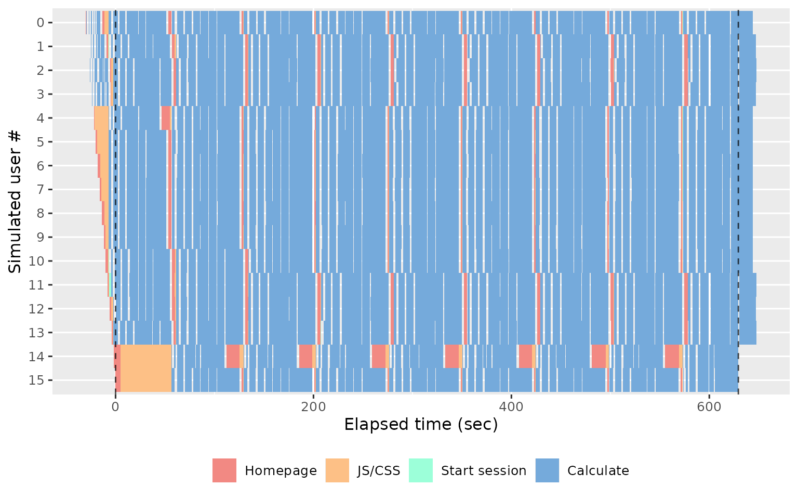
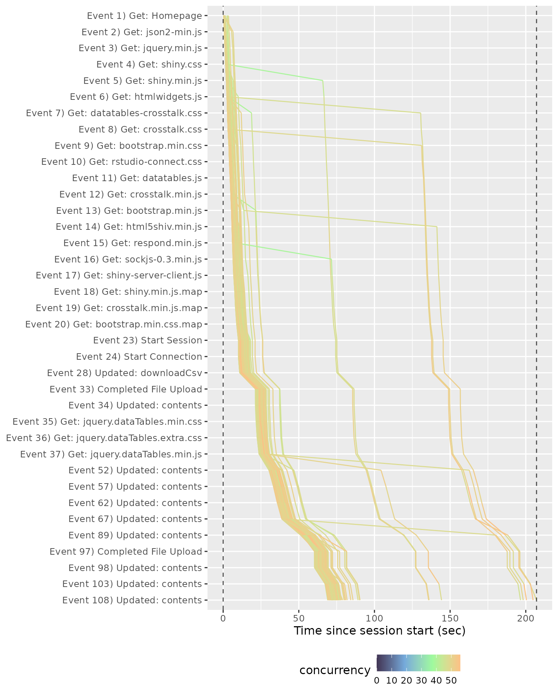

Analyzing results
2018-09-05
Source:vignettes/analyzing-load-test-logs.Rmd
analyzing-load-test-logs.RmdThis vignette shows you how to analyse the results of your load tests, explaining the plots produced in the report, and giving a few tips on interpretation.
Loading data
Start by loading the shinycannon results into R with
load_runs(). If you have a single run, just give it the
directory of the results:
df <- load_runs("test_sessions/demo1")If you have multiple runs, give it multiple directories, optionally providing informative labels. Here I’m loading three runs that replay the same script simulating 1, 4, and 16 simultaneous uses:
df <- load_runs(
`1 user` = "test_sessions/demo1",
`4 users` = "test_sessions/demo4",
`16 users` = "test_sessions/demo16"
)load_runs() returns a tidy tibble:
df
#> # A tibble: 11,729 × 13
#> run user_id session_id iteration input_line_number event start end
#> <ord> <int> <int> <int> <int> <chr> <dbl> <dbl>
#> 1 1 user 0 0 0 1 REQ_HOME 0 0.308
#> 2 1 user 0 0 0 2 REQ_GET 0.309 0.316
#> 3 1 user 0 0 0 3 REQ_GET 0.316 0.323
#> 4 1 user 0 0 0 4 REQ_GET 0.323 0.33
#> 5 1 user 0 0 0 5 REQ_GET 0.33 0.339
#> 6 1 user 0 0 0 6 REQ_GET 0.339 0.351
#> 7 1 user 0 0 0 7 REQ_GET 0.351 0.361
#> 8 1 user 0 0 0 8 REQ_GET 0.361 0.365
#> 9 1 user 0 0 0 9 REQ_GET 0.366 0.373
#> 10 1 user 0 0 0 10 REQ_GET 0.373 0.382
#> # ℹ 11,719 more rows
#> # ℹ 5 more variables: time <dbl>, concurrency <dbl>, maintenance <lgl>,
#> # label <ord>, json <list>The first three variables identify each simulated session:
-
runlabels each shinycannon run. -
user_idlabels each simulated user (shinycannon worker) within a run. -
session_iduniquely identifies each simulated session (script replay) within a run.
?load_runs provides a full description of all the
variables.
Report output
You won’t generally work with this data directly — instead, you’ll usually start by creating a standalone HTML report:
shinyloadtest_report(df, "report.html")This report contains six pages of diagnostic information: sessions, session duration, event waterfall, latency, event duration, and event concurrency. I describe each page below.
Sessions
The Sessions page displays the summarises the simulated sessions performed by each shinycannon worker. Each row represent one worker and each rectangle represents one event. The width of the rectangle gives the duration of the event, and the colour gives the event type. For example, the following plot shows the actions performed by 4 workers over 5 minutes (600s):

If you use more workers, you’ll see more rows. The following plot shows the results from 16 simultaneous workers:

The first thing to look for in this plot is the balance between the user waiting for the app (coloured rectangles) and the app waiting for the user (gray background shows through). The more brightly coloured the plot, the more time that the user spends waiting. The precise colour of the block is also informative, as there are five types of action that proceed in roughly the same order in every session:
Homepage (red): the browser first loads the HTML homepage generated by your
ui, representing the start of a new simulated session. If the first session takes a long time to load, you’re probably doing too much work on start up (but you’ll have also noticed this when starting the app yourself). If subsequent sessions take a long time, you probably have aui()function that is doing too much work.JS/CSS (orange): once the browser has read the homepage, it next requests the
.cssand.jsfiles needed to render the page. It is very rare for these to take a long time, and typically if they do it’s because the server is “blocked” waiting for computation requested by another worker.Start session (green): now the browser creates a bi-direction line of communication to the Shiny session using SockJS. The browser uses this to notify Shiny when the user interacts with an input, and Shiny uses it to tell the browser how to update the outputs.
Calculate (blue): the user has changed an input and Shiny has performed computation to update an output or execute an observer.
Waiting (uncoloured): the app is waiting for input; i.e. the user is thinking about what to do next.
Also note the dotted vertical lines. These show the three major phases of the load test:
Before the first dotted line, we have the warmup phase, where shinycannon gradually ramps up to the desired number of workers.
Next we have the maintenance phase, where the number of sessions is held constant; whenever one replay completes, shinycannon restarts the script.
Finally, after the second dotted line, we have the cooldown phase where the workers are shut down one at a time, until none are left the run is complete..
The rest of the report will focus on sessions in the maintenance
phase since these represent an app under the full load of simultaneous
users. If the maintenance period is a only a small proportion of the
full app, you’ll need to re-run the simulation with a greater
--loaded-duration-minutes value.
The sessions tab gives you an overview of the experimental design (how sessions were assigned to workers), so you’ll generally only spend a small amount of time on this page before moving on to the session duration.
Session duration
The Session duration page uses similar graphical conventions to the Session page but instead of one worker per row, we now have one session per row, and the time on the x-axis is relative to session start. A red line shows the running time of the original script.

This plot shows us that most sessions are completed in about the same amount of time as the original script, which suggests that the app can comfortably handle four simultaneous users. We get a very different picture if we look at the performance of the app with 16 simultaneous users:
The fastest session now takes ~4 times longer than the original recording, and there’s one session that takes twice again as long again. This suggests that we’ve overloaded the server and we either need to increase server resources or optimise the app.
Event waterfall
The Event Waterfall gives a more precise view into the individual events within a recording. Each line represents a session, with events running from top to bottom, and elapsed time on the x-axis.

In this plot you’re primarily looking for uniform shape. In particular, you want the lines to be parallel, because a crossing line indicates that user A started before user B, but finished afterwards (this is like seeing the table that ordered after you get their food first). We can see this problem in different run, where a file was uploaded and many POST requests were made.

Latency
The Latency page summarises the amount of time spent waiting, broken down in to total HTTP (homepage + js/css) and websockets (representing calculation). The Total HTTP latency plot shows how long a user has to wait before they see something in their browser. Ideally, this will be very short since the server is just providing static files.

The variability is because R is single threaded; if Shiny is performing a computation for another worker, it can’t launch the transmission of static files.
The Maximum WebSocket latency shows how much time time a user spends waiting for outputs to be updated. This basically represents how much time R spends computing. To make this faster, you’ll need to make your R code faster.

Event duration
The Event Duration page helps understand the variability of individual events. Each event is summarised with a boxplot, with run on the x-axis and time on the y-axis:

Since there are typically many events, and most are uninteresting, the report gives you three ways to find interesting events:
- Slowest maximum time.
- Slowest minimum time.
- Largest mean difference (only shown if more than one run being processed).
These plots can help you find events that are either slow, or have high variability. You’ll then need to backtrack to the underlying Shiny code and think about how to improve performance.
Event concurrency
The Event Concurrency page helps you understand how events responded to varying degrees of concurrent load. Each simulated session is represented by a point with number of concurrent processes on the x-axis and time taken on the y-axis. The points are coloured by run. Each run also gets a line of best fit, which gives a sense for how the event respond to increasing concurrency.

Like Event Duration, most events are uninteresting, so the report gives you three ways of sorting to find interesting events:
- Largest slope, which emphasises events that appear to respond particularly poorly to increasing concurrency.
- Largest intercept
- Largest error
If you want your app to handle as many user as possible, look for events where the time increases steeply with concurrency - these are places where optimisation will have the greatest impact.